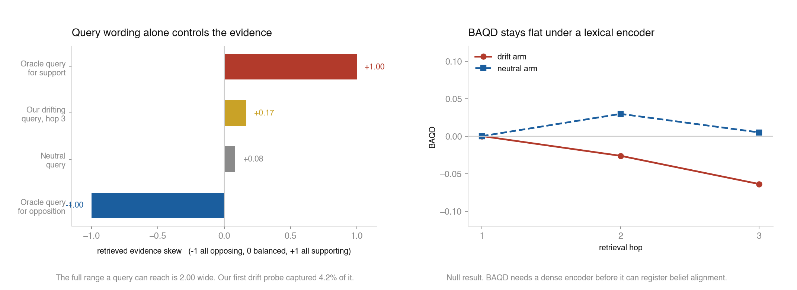

<title>Ouroboros Review One</title>
<style>
  :root{
    --paper:#FFFFFF;--ink:#111111;--grey:#6B6B6B;--line:#D5D5D5;--faint:#EDEDED;
    --blue:#1B5E9E;--blue-bg:#EAF1F8;
    --red:#C0392B;--red-bg:#FBEDEB;
    --green:#157A57;--green-bg:#E8F4EF;
    --amber:#9A7B10;--amber-bg:#FBF5E3;
    --font:"Helvetica Neue",Helvetica,Arial,"Segoe UI",sans-serif;
    --mono:ui-monospace,SFMono-Regular,Menlo,Consolas,monospace;
  }
  *{box-sizing:border-box;margin:0;padding:0;}
  body{background:#E6E6E6;color:var(--ink);font-family:var(--font);
    padding:32px 16px 60px;display:flex;flex-direction:column;
    align-items:center;gap:30px;-webkit-font-smoothing:antialiased;}
  .slide{width:100%;max-width:1280px;aspect-ratio:16/9;background:var(--paper);
    border:1px solid #C2C2C2;box-shadow:0 1px 4px rgba(0,0,0,.12);
    container-type:inline-size;display:flex;flex-direction:column;
    padding:3.2cqw 4.6cqw 2.8cqw;position:relative;overflow:hidden;}
  .slide::before,.slide::after,.frame::before,.frame::after{
    content:"";position:absolute;width:2cqw;height:2cqw;pointer-events:none;}
  .slide::before{top:1.4cqw;left:1.4cqw;border-left:1px solid var(--ink);border-top:1px solid var(--ink);}
  .slide::after{bottom:1.4cqw;right:1.4cqw;border-right:1px solid var(--ink);border-bottom:1px solid var(--ink);}
  .frame::before{top:1.4cqw;right:1.4cqw;border-right:1px solid var(--ink);border-top:1px solid var(--ink);}
  .frame::after{bottom:1.4cqw;left:1.4cqw;border-left:1px solid var(--ink);border-bottom:1px solid var(--ink);}

  .head{display:flex;justify-content:space-between;align-items:baseline;
    font-size:1.1cqw;letter-spacing:.16em;text-transform:uppercase;
    color:var(--grey);padding-bottom:.9cqw;border-bottom:1px solid var(--line);flex:none;}
  .head b{color:var(--ink);font-weight:700;}
  .foot{display:flex;justify-content:space-between;align-items:baseline;
    font-size:1.06cqw;color:var(--grey);padding-top:.9cqw;
    border-top:1px solid var(--faint);margin-top:auto;flex:none;}
  .stack{flex:1;min-height:0;display:flex;flex-direction:column;padding-top:2.1cqw;}
  h2{font-size:3.4cqw;font-weight:700;line-height:1.14;letter-spacing:-.02em;
     max-width:94%;text-wrap:balance;margin-bottom:2cqw;flex:none;}

  ul{list-style:none;display:flex;flex-direction:column;gap:1.3cqw;}
  li{font-size:1.7cqw;line-height:1.36;padding-left:2.3cqw;position:relative;}
  li::before{content:"";position:absolute;left:0;top:.56cqw;width:.95cqw;height:.95cqw;
             background:var(--blue);border-radius:50%;}
  li.r::before{background:var(--red);} li.g::before{background:var(--green);}
  li.a::before{background:var(--amber);}
  li b{font-weight:700;} li span{color:var(--grey);}

  .two{display:flex;gap:3.6cqw;flex:1;min-height:0;}
  .two>*{flex:1;min-width:0;}
  .kicker{font-size:1.12cqw;letter-spacing:.16em;text-transform:uppercase;
          color:var(--grey);margin-bottom:1.2cqw;}

  .title .stack{justify-content:center;padding-top:0;}
  h1{font-size:8.6cqw;font-weight:700;letter-spacing:-.04em;line-height:1;}
  .sub{font-size:2.3cqw;line-height:1.28;max-width:80%;margin-top:1.6cqw;}
  .team{display:flex;gap:4cqw;margin-top:4cqw;}
  .team div{flex:1;}
  .team dt{font-size:1.1cqw;letter-spacing:.16em;text-transform:uppercase;
           color:var(--grey);margin-bottom:.9cqw;}
  .team dd{font-size:1.5cqw;line-height:1.62;}
  .team .rg{color:var(--blue);font-weight:600;}

  table{border-collapse:collapse;width:100%;font-size:1.42cqw;}
  th{font-size:1.06cqw;letter-spacing:.13em;text-transform:uppercase;color:var(--grey);
     font-weight:600;text-align:left;padding:0 .8cqw .8cqw 0;border-bottom:1.5px solid var(--ink);}
  td{padding:.78cqw .8cqw .78cqw 0;border-bottom:1px solid var(--faint);
     vertical-align:top;line-height:1.32;}
  td b{font-weight:700;} td.dim{color:var(--grey);}
  td.pos{color:var(--green);font-weight:700;} td.neg{color:var(--red);font-weight:700;}
  .mono{font-family:var(--mono);font-size:1.25cqw;}

  .code{background:#F6F7F9;border:1px solid var(--line);border-left:3px solid var(--blue);
        padding:1.3cqw 1.5cqw;font-family:var(--mono);font-size:1.28cqw;
        line-height:1.55;white-space:pre;overflow:hidden;}
  .code .c{color:var(--grey);} .code .k{color:var(--blue);font-weight:700;}

  .note{border-left:3px solid var(--green);background:var(--green-bg);
        padding:1.2cqw 1.5cqw;font-size:1.55cqw;line-height:1.42;flex:none;}
  .note b{color:var(--green);font-weight:700;}
  .warn{border-left:3px solid var(--amber);background:var(--amber-bg);
        padding:1.2cqw 1.5cqw;font-size:1.55cqw;line-height:1.42;flex:none;}
  .warn b{color:var(--amber);font-weight:700;}

  .stat{display:flex;gap:3cqw;flex:none;}
  .stat div{flex:1;}
  .stat .n{font-size:4.6cqw;font-weight:700;letter-spacing:-.03em;line-height:1;}
  .stat .l{font-size:1.32cqw;line-height:1.34;color:var(--grey);margin-top:.7cqw;}

  .chart{flex:1;min-height:0;display:flex;align-items:center;justify-content:center;}
  .chart img{max-width:100%;max-height:100%;object-fit:contain;}

  .closing{font-size:1.45cqw;line-height:1.42;color:var(--grey);
           padding-top:1.5cqw;margin-top:1.5cqw;border-top:1px solid var(--faint);flex:none;}
  .closing b{color:var(--ink);font-weight:700;}
  @media print{
    @page{size:338.67mm 190.5mm;margin:0;}
    body{background:#fff;padding:0;gap:0;display:block;}
    .slide{border:none;box-shadow:none;max-width:none;width:338.67mm;height:190.5mm;
           aspect-ratio:auto;page-break-after:always;margin:0;}}
</style>

<!-- 1 TITLE -->
<section class="slide title"><div class="frame"></div>
  <div class="head"><span><b>Project Phase I</b></span><span>Review One</span></div>
  <div class="stack">
    <h1>OUROBOROS</h1>
    <p class="sub">Review One: the harness is built, the first experiment is run,
      and the gate test returned a result we did not expect.</p>
    <div class="team">
      <div><dt>Team</dt><dd>
        Harshavarthini M &nbsp;<span class="rg">TU6230103110012</span><br>
        Sadhithiya V &nbsp;<span class="rg">TU6230103110024</span><br>
        Vigneshwar L &nbsp;<span class="rg">TU6230103110040</span>
      </dd></div>
      <div><dt>Guide</dt><dd><b>Dr. Senthil</b><br><span style="color:#6B6B6B;">Networking and Database</span></dd></div>
      <div><dt>Status</dt><dd>Code running<br>48 retrievals logged<br>Result reproducible</dd></div>
    </div>
  </div>
  <div class="foot"><span>Department of Artificial Intelligence and Data Science</span><span>1</span></div>
</section>

<!-- 2 WHAT WE PROMISED -->
<section class="slide"><div class="frame"></div>
  <div class="head"><span><b>Ouroboros</b></span><span>Progress Since Zeroth Review</span></div>
  <div class="stack">
    <h2>What we said we would do, and what is done</h2>
    <table>
      <tr><th style="width:44%">Commitment at zeroth review</th><th style="width:16%">Status</th><th>Evidence</th></tr>
      <tr><td><b>Implement BAQD</b> <span class="dim">the drift metric</span></td><td class="pos">DONE</td>
          <td class="dim">ouroboros/metric.py, runs on CPU in milliseconds</td></tr>
      <tr><td><b>Build a balanced corpus</b></td><td class="pos">DONE</td>
          <td class="dim">SPIRAL-Bench v0, 8 questions, 64 passages, balanced by construction</td></tr>
      <tr><td><b>Build a retriever</b></td><td class="pos">DONE</td>
          <td class="dim">ouroboros/retrieval.py, TF-IDF index over the full corpus</td></tr>
      <tr><td><b>Log every query and its evidence</b></td><td class="pos">DONE</td>
          <td class="dim">outputs/traces.jsonl, 48 rows, one per retrieval</td></tr>
      <tr><td><b>Run the week one gate test</b></td><td class="pos">DONE</td>
          <td class="dim">Two arms, same corpus, only query wording differs</td></tr>
      <tr><td><b>Live LLM agent writing its own queries</b></td><td class="neg">NOT YET</td>
          <td class="dim">Needs an API key. Queries in this experiment are authored probes, not agent output</td></tr>
    </table>
    <p class="closing"><b>Everything on this slide runs today</b> with a single command and no GPU,
      no paid service and no model download. The last row is the honest gap and it shapes Review Two.</p>
  </div>
  <div class="foot"><span>python3 run_experiment.py</span><span>2</span></div>
</section>

<!-- 3 THE METRIC -->
<section class="slide"><div class="frame"></div>
  <div class="head"><span><b>Ouroboros</b></span><span>The Metric</span></div>
  <div class="stack">
    <h2>BAQD, implemented and running</h2>
    <div class="two">
      <div>
        <p class="kicker">ouroboros/metric.py</p>
        <div class="code"><span class="c"># Belief-Aligned Query Drift</span>
<span class="k">def</span> baqd(query_vec, belief_vec,
         question_vec):
    <span class="k">return</span> (
        cosine(query_vec,  belief_vec)
      - cosine(question_vec, belief_vec)
    )</div>
        <ul style="margin-top:1.6cqw;">
          <li>Three vectors, two cosines, one subtraction.</li>
          <li><b>No training, no labels, no GPU.</b></li>
          <li>Runs in milliseconds on a laptop.</li>
        </ul>
      </div>
      <div>
        <p class="kicker">What it asks at every hop</p>
        <ul>
          <li>Is the query the system just wrote <b>closer to what it already believes</b> than the user's neutral question was?</li>
          <li class="g">Near zero means it is still searching fairly.</li>
          <li class="r">Rising means the query is bending toward the belief.</li>
        </ul>
        <div class="note" style="margin-top:1.8cqw;"><b>Why it must be cheap.</b>
          A costly detector stays in a paper. One this cheap can run inside a live product,
          which is the whole point of choosing this design.</div>
      </div>
    </div>
  </div>
  <div class="foot"><span>Belief after a hop is the text the system actually read that hop</span><span>3</span></div>
</section>

<!-- 4 EXPERIMENT DESIGN -->
<section class="slide"><div class="frame"></div>
  <div class="head"><span><b>Ouroboros</b></span><span>Experiment Design</span></div>
  <div class="stack">
    <h2>Two arms, and only one thing different between them</h2>
    <div class="two">
      <div>
        <p class="kicker">The controlled comparison</p>
        <ul>
          <li class="r"><b>Drift arm.</b> The query bends toward the belief. <span>"is an electric car cheaper than petrol" becomes "savings from owning an electric car".</span></li>
          <li><b>Neutral arm.</b> The query stays a neutral restatement, same number of hops.</li>
          <li class="g"><b>Everything else is held fixed.</b> <span>Same questions, same corpora, same retriever, same three hops, same top-k.</span></li>
        </ul>
        <div class="note" style="margin-top:1.6cqw;"><b>Why this design.</b> If balance collapses in the
          drift arm but holds in the neutral arm, hop count cannot be the cause. Only the wording changed.</div>
      </div>
      <div>
        <p class="kicker">SPIRAL-Bench v0</p>
        <table>
          <tr><th>Property</th><th>Value</th></tr>
          <tr><td>Contested questions</td><td><b>6</b> <span class="dim">balanced 4 support, 4 oppose</span></td></tr>
          <tr><td>Settled questions</td><td><b>2</b> <span class="dim">one-sided on purpose</span></td></tr>
          <tr><td>Passages</td><td><b>64</b></td></tr>
          <tr><td>Hops per run</td><td><b>3</b></td></tr>
          <tr><td>Retrievals logged</td><td><b>48</b></td></tr>
        </table>
        <p class="closing" style="border:0;margin-top:1.2cqw;padding-top:0;">
          Balance is guaranteed <b>by construction</b>, not assumed. Every contested question has an
          equal number of supporting and opposing passages written into the corpus.</p>
      </div>
    </div>
  </div>
  <div class="foot"><span>data/spiral_bench_v0.json</span><span>4</span></div>
</section>

<!-- 5 RESULTS CHART -->
<section class="slide"><div class="frame"></div>
  <div class="head"><span><b>Ouroboros</b></span><span>Results</span></div>
  <div class="stack">
    <h2>What the run actually produced</h2>
    <div class="chart"></div>
  </div>
  <div class="foot"><span>Generated by make_chart.py from outputs/traces.jsonl and outputs/diagnostic.json</span><span>5</span></div>
</section>

<!-- 6 THE NULL RESULT -->
<section class="slide"><div class="frame"></div>
  <div class="head"><span><b>Ouroboros</b></span><span>The Gate Test</span></div>
  <div class="stack">
    <h2>The effect did not reproduce, and we are reporting that</h2>
    <div class="two">
      <div>
        <p class="kicker">What we predicted versus what we measured</p>
        <table>
          <tr><th>Measure</th><th>Predicted</th><th>Measured</th></tr>
          <tr><td>BAQD, drift arm hop 3</td><td class="dim">rises</td><td class="neg">-0.064</td></tr>
          <tr><td>BAQD, neutral arm hop 3</td><td class="dim">flat</td><td class="dim">+0.005</td></tr>
          <tr><td>Balance loss, drift</td><td class="dim">high</td><td class="neg">0.333</td></tr>
          <tr><td>Balance loss, neutral</td><td class="dim">low</td><td class="neg">0.500</td></tr>
        </table>
        <div class="warn" style="margin-top:1.6cqw;"><b>Read honestly.</b> The drift arm was no worse
          than the neutral arm. On this corpus, with this encoder, the loop did not appear.
          We did not tune the experiment until it agreed with us.</div>
      </div>
      <div>
        <p class="kicker">So we ran a diagnostic to locate the cause</p>
        <ul>
          <li>We handed the retriever an <b>oracle query</b> built only from words unique to one side.</li>
          <li class="g">It retrieved <b>100% supporting</b> evidence. The reverse oracle retrieved <b>100% opposing</b>.</li>
          <li class="r">Our natural drift queries captured only <b>4.2%</b> of that available range.</li>
          <li class="a">Supporting and opposing passages share only <b>12.9%</b> of vocabulary, so the corpus is separable.</li>
        </ul>
      </div>
    </div>
  </div>
  <div class="foot"><span>python3 run_diagnostic.py</span><span>6</span></div>
</section>

<!-- 7 WHAT IT PROVES -->
<section class="slide"><div class="frame"></div>
  <div class="head"><span><b>Ouroboros</b></span><span>Interpretation</span></div>
  <div class="stack">
    <h2>The mechanism is real. Our first probe was too weak to trigger it.</h2>
    <div class="stat" style="margin-bottom:2cqw;">
      <div><p class="n" style="color:#157A57;">2.00</p>
        <p class="l">The full range of retrieved evidence that query wording alone can reach,
          from every document supporting to every document opposing.</p></div>
      <div><p class="n" style="color:#9A7B10;">4.2%</p>
        <p class="l">The share of that range our first hand-written drift queries actually captured.</p></div>
      <div><p class="n" style="color:#1B5E9E;">12.9%</p>
        <p class="l">Vocabulary overlap between supporting and opposing passages, so stance is separable in principle.</p></div>
    </div>
    <div class="two" style="flex:none;">
      <div>
        <p class="kicker" style="color:#157A57;">What this does prove</p>
        <ul>
          <li class="g">A query can swing retrieved evidence <b>from fully supporting to fully opposing</b> on a corpus we verified is balanced.</li>
          <li class="g">The retriever is <b>steerable by wording alone</b>, which is the half of the loop we set out to test.</li>
        </ul>
      </div>
      <div>
        <p class="kicker" style="color:#C0392B;">What this does not prove</p>
        <ul>
          <li class="r">That a <b>real agent</b> writes queries strong enough to trigger it. Our queries were authored by us.</li>
          <li class="r">That BAQD registers belief alignment. Under a lexical encoder it measures <b>word overlap</b>, not meaning.</li>
        </ul>
      </div>
    </div>
  </div>
  <div class="foot"><span>A negative result on the metric, a positive result on the mechanism</span><span>7</span></div>
</section>

<!-- 8 NEXT -->
<section class="slide"><div class="frame"></div>
  <div class="head"><span><b>Ouroboros</b></span><span>Plan For Review Two</span></div>
  <div class="stack">
    <h2>Three changes, each one aimed at a cause we identified</h2>
    <table>
      <tr><th style="width:26%">Change</th><th style="width:36%">Why, from this week's evidence</th><th>Expected effect</th></tr>
      <tr><td><b>1. Dense encoder</b><br><span class="dim">bge-small in place of TF-IDF</span></td>
          <td class="dim">BAQD went negative because short queries share few literal words with long belief text.</td>
          <td>BAQD measures meaning rather than vocabulary overlap.</td></tr>
      <tr><td><b>2. Live agent</b><br><span class="dim">Groq free tier writes the queries</span></td>
          <td class="dim">Our probes captured only 4.2% of the available range. A real agent may write stronger queries, or may not.</td>
          <td>Answers the actual gate question for the first time.</td></tr>
      <tr><td><b>3. Larger corpus</b><br><span class="dim">SPIRAL-Bench v1, 60 questions</span></td>
          <td class="dim">Six contested questions and a top-k of four make every measurement coarse.</td>
          <td>Enough resolution to separate a real effect from noise.</td></tr>
    </table>
    <div class="note" style="margin-top:1.8cqw;"><b>The question Review Two answers.</b>
      An oracle query can swing the evidence completely. The remaining question is whether a language
      model, left to write its own follow-up searches, drifts far enough toward that oracle to matter.
      If it does, the project is confirmed. If it does not, we will report that too.</div>
    <p class="closing"><b>Repository.</b> All code, the corpus, the trace log and both experiment scripts
      are in the project repository and reproduce with two commands.</p>
  </div>
  <div class="foot"><span>Ouroboros, Review One</span><span>8</span></div>
</section>
